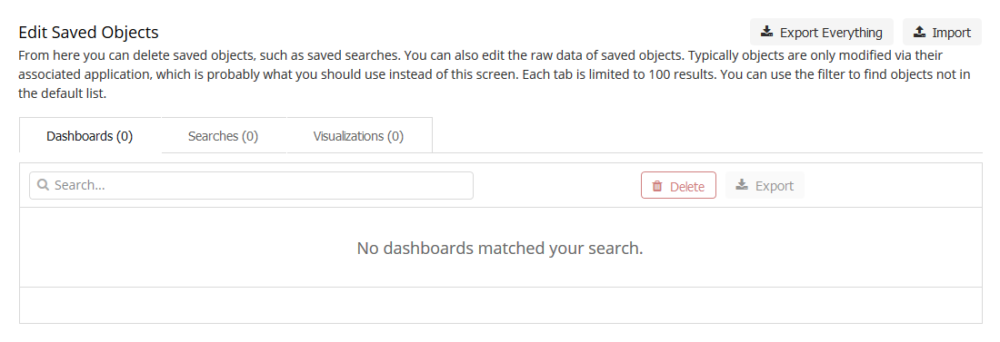
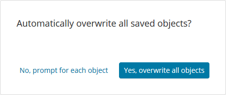

Elasticsearch and Kibana🔗
To set up visual dashboards of DMARC data, install Elasticsearch and Kibana.
Note
Elasticsearch and Kibana 6 or later are required
Installation🔗
On Debian/Ubuntu based systems, run:
sudo apt-get install -y apt-transport-https
wget -qO - https://artifacts.elastic.co/GPG-KEY-elasticsearch | sudo gpg --dearmor -o /usr/share/keyrings/elasticsearch-keyring.gpg
echo "deb [signed-by=/usr/share/keyrings/elasticsearch-keyring.gpg] https://artifacts.elastic.co/packages/8.x/apt stable main" | sudo tee /etc/apt/sources.list.d/elastic-8.x.list
sudo apt-get update
sudo apt-get install -y elasticsearch kibana
For CentOS, RHEL, and other RPM systems, follow the Elastic RPM guides for Elasticsearch and Kibana.
Note
Previously, the default JVM heap size for Elasticsearch was very small (1g),
which will cause it to crash under a heavy load. To fix this, increase the
minimum and maximum JVM heap sizes in /etc/elasticsearch/jvm.options to
more reasonable levels, depending on your server's resources.
Make sure the system has at least 2 GB more RAM than the assigned JVM heap size.
Always set the minimum and maximum JVM heap sizes to the same value.
For example, to set a 4 GB heap size, set
See https://www.elastic.co/guide/en/elasticsearch/reference/current/important-settings.html#heap-size-settings for more information.
sudo systemctl daemon-reload
sudo systemctl enable elasticsearch.service
sudo systemctl enable kibana.service
sudo service elasticsearch start
sudo service kibana start
As of Elasticsearch 8.7, activate secure mode (xpack.security.*.ssl)
Add the following configuration
# Enable security features
xpack.security.enabled: true
xpack.security.enrollment.enabled: true
# Enable encryption for HTTP API client connections, such as Kibana, Logstash, and Agents
xpack.security.http.ssl:
enabled: true
keystore.path: certs/http.p12
# Enable encryption and mutual authentication between cluster nodes
xpack.security.transport.ssl:
enabled: true
verification_mode: certificate
keystore.path: certs/transport.p12
truststore.path: certs/transport.p12
To create a self-signed certificate, run:
Or, to create a Certificate Signing Request (CSR) for a CA, run:
Fill in the prompts. Watch out for Common Name (e.g. server FQDN or YOUR domain name), which is the IP address or domain name that you will use to access Kibana. it is the most important field.
If you generated a CSR, remove the CSR after you have your certs
Move the keys into place and secure them:
Activate the HTTPS server in Kibana
Add the following configuration
server.host: "SERVER_IP"
server.publicBaseUrl: "https://SERVER_IP"
server.ssl.enabled: true
server.ssl.certificate: /etc/kibana/kibana.crt
server.ssl.key: /etc/kibana/kibana.key
Note
For more security, you can configure Kibana to use a local network connexion to elasticsearch :
=>Enroll Kibana in Elasticsearch
Then access to your web server at https://SERVER_IP:5601, accept the self-signed
certificate and paste the token in the "Enrollment token" field.
Then put the verification code to your web browser.
End Kibana configuration
sudo /usr/share/elasticsearch/bin/elasticsearch-setup-passwords interactive
sudo /usr/share/kibana/bin/kibana-encryption-keys generate
sudo vim /etc/kibana/kibana.yml
Add previously generated encryption keys
xpack.encryptedSavedObjects.encryptionKey: xxxx...xxxx
xpack.reporting.encryptionKey: xxxx...xxxx
xpack.security.encryptionKey: xxxx...xxxx
Now that Elasticsearch is up and running, use parsedmarc to send data to
it.
Download (right-click the link and click save as) export.ndjson.
Connect to kibana using the "elastic" user and the password you previously provide on the console ("End Kibana configuration" part).
Import export.ndjson the Saved Objects tab of the Stack management
page of Kibana. (Hamburger menu -> "Management" -> "Stack Management" ->
"Kibana" -> "Saved Objects")
It will give you the option to overwrite existing saved dashboards or visualizations, which could be used to restore them if you or someone else breaks them, as there are no permissions/access controls in Kibana without the commercial X-Pack.
 
Upgrading Kibana index patterns🔗
parsedmarc 5.0.0 makes some changes to the way data is indexed in
Elasticsearch. if you are upgrading from a previous release of
parsedmarc, you need to complete the following steps to replace the
Kibana index patterns with versions that match the upgraded indexes:
- Login in to Kibana, and click on Management
- Under Kibana, click on Saved Objects
- Check the checkboxes for the
dmarc_aggregateanddmarc_forensicindex patterns - Click Delete
- Click Delete on the conformation message
- Download (right-click the link and click save as) the latest version of export.ndjson
- Import
export.ndjsonby clicking Import from the Kibana Saved Objects page
Records retention🔗
Starting in version 5.0.0, parsedmarc stores data in a separate
index for each day to make it easy to comply with records
retention regulations such as GDPR. For more information,
check out the Elastic guide to managing time-based indexes efficiently.